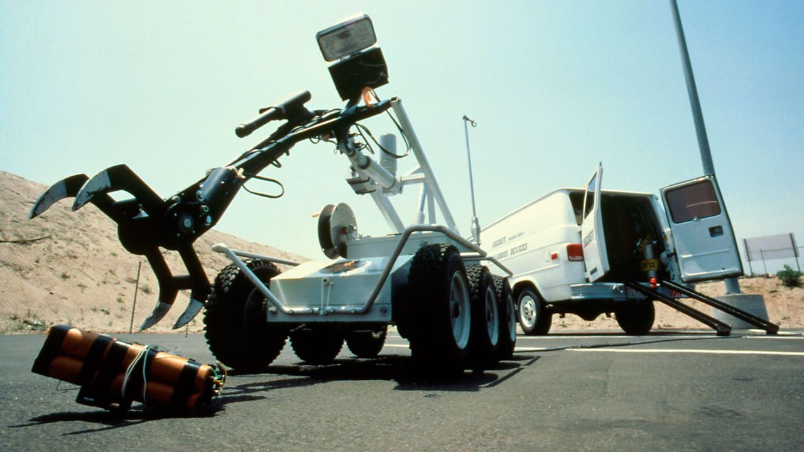

How autonomous is the robot, and where can it operate?
Understanding a sentence, recognizing an object and grabbing it with the right amount of force are not enough to make a robot ready for the real world.
To understand where a robot can actually work, it helps to ask two questions: how much does it decide on its own, and how predictable is the environment it’s in?
Question 1: how much does it decide on its own?
The first question is about autonomy, which is not a “yes or no” matter but a scale.
- At one end are remote-controlled robots, where a human always makes the decisions. One example is the robots used to defuse explosive devices, which let an operator work from a safe distance.
- In the middle of the scale are semi-autonomous systems, where the robot does part of the work while a human supervises. One example is a car that keeps itself in its lane, with the driver ready to take back control at any moment.
- At the other end are fully autonomous robots, which perceive, decide and act without any human intervention, like a robot vacuum cleaner or a driverless taxi.

Question 2: how predictable is the environment?
- In a factory, everything is designed to always be the same: parts arrive at the same spot, with the same orientation, at the same speed.
- In a home or a warehouse, things change a bit: a chair that’s been moved, a box out of place or a cat crossing the room are unpredictable factors that can get in the way of a robot working correctly. Still, these are limited and relatively familiar spaces.
- On the road, in the sky or in an area hit by a disaster, on the other hand, the unexpected is the rule: pedestrians crossing suddenly, rain and fog, rubble that keeps shifting.
Putting the two questions together, a simple principle emerges:
the more unpredictable the environment, the more artificial intelligence is needed, and the harder it is to make a robot truly autonomous.
This explains a fact that may seem strange at first: industrial robots have been working in factories for over sixty years, while driverless cars still operate in only a few cities around the world. The reason is precisely that the factory was designed to eliminate the unexpected, while the road is made of unexpected events.

There is also a third factor that is often overlooked: the cost of a mistake. If a robot vacuum makes a mistake, it bumps into a chair and changes direction. If a self-driving car makes a mistake, the consequences can be extremely serious. This is why a robot can be left completely free only when the environment is predictable enough, or when its mistakes don’t put anyone in danger. In all other cases, humans still play a key role in the decision-making loop.
In the next sections, we will look at the conditions these robots operate in: those that work in the controlled spaces of our homes and warehouses, and those that face the open world, from roads to the skies to rescue zones.
One fundamental question remains, though: if a robot has to learn to move in such difficult environments, how do you train it? A robot learning to walk falls thousands of times before it succeeds, but a car certainly can’t learn to drive by crashing. That’s why researchers build virtual worlds: simulated environments where the robot can make millions of mistakes without breaking and without hurting anyone, trying out in a few hours situations that would take years in real life. How these worlds are built, and how closely they can really resemble reality, will also be a topic of the next sections.